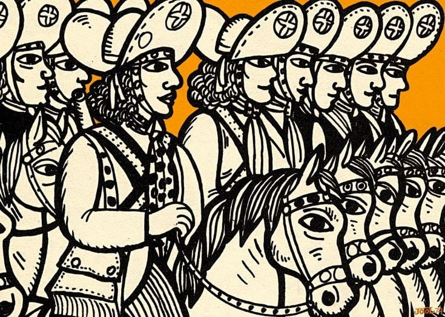

CULTURA E ARTE DO NORDESTE BRASILEIRO.
Bem-vindo ao nosso portal dedicado à rica e vibrante cultura do Nordeste brasileiro! Explore a magia que envolve esta região fascinante, onde a música, dança, gastronomia e artesanato se entrelaçam para criar um cenário de beleza única. De festivais de forró aos mestres da literatura de cordel, estamos aqui para mergulhar juntos na essência deste incrível patrimônio cultural. Vamos juntos em uma jornada de descoberta e celebração do Nordeste do Brasil.
